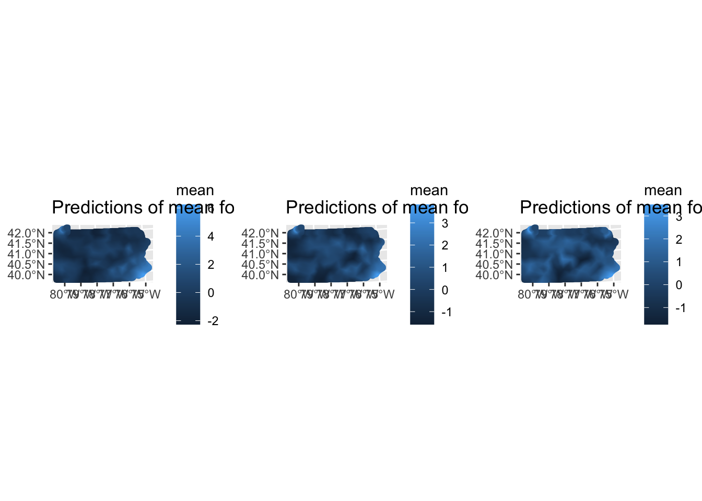
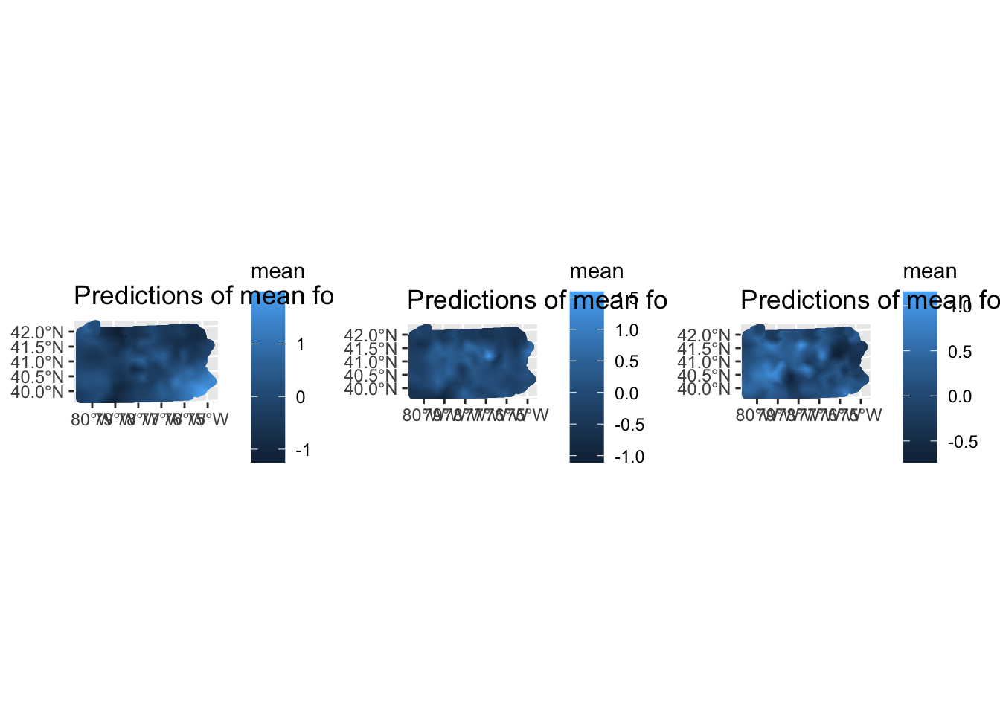
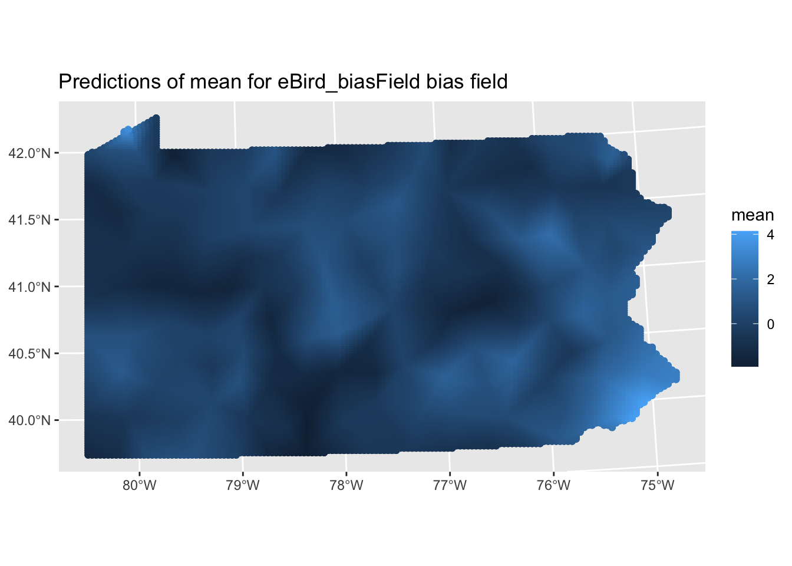

Multi-Species Integrated Species Distribution Modeling Workshop
Author
Ron R Togunov, Philip Mostert, Bob O’Hara
Published
July 10, 2024
Introduction
Multi-species integrated Species Distribution Models (iSDMs) offer powerful tools for ecological analysis. These models allow us to simultaneously analyze multiple species, potentially improving our understanding of species distributions and the factors that influence them. By default, these models share range, standard deviation, and precision parameters across species, which can lead to more robust estimates, especially for rare species or those with limited data. Additionally, this approach can help in correcting for sampling bias, a common issue in ecological data collection.
This workshop aims to guide you through the process of setting up and interpreting multi-species iSDMs using the PointedSDMs package. We’ll explore various modeling approaches and discuss their ecological implications.
Setophaga Example
In this workshop, we’ll focus on predicting the distribution of three Setophaga warbler species across Pennsylvania, USA. These species are:
Setophaga fusca (Blackburnian Warbler)
Setophaga caerulescens (Black-throated Blue Warbler)
Setophaga magnolia (Magnolia Warbler)
We’ll use data from three different sources, each with its own strengths and potential biases:
eBird: A citizen science project, providing extensive data but potentially biased towards accessible areas and popular birding spots.
North American Breeding Bird Survey (BBS): A standardized survey, providing consistent sampling but limited in spatial coverage.
Pennsylvania Breeding Bird Atlas (BBA): A comprehensive survey, but conducted over a longer time period.
We’ll also incorporate environmental covariates to help explain species distributions:
Elevation: Which can influence temperature, precipitation, and vegetation types.
Canopy cover: As a proxy for forest habitat, which is important for these woodland warblers.
Coniferous forest cover:
By combining these diverse data sources and environmental information, we aim to create a comprehensive model of warbler distributions in Pennsylvania.
Model Preparations
First, let’s load the required packages and prepare our data:
Visualizing Covariate Interpolation
Before we build our models, it’s crucial to understand how our environmental covariates are represented across the study area. The following code creates visualizations of our elevation and canopy cover data:
The following object is masked from 'package:stats':
filter
# project covs to project projcovs <-project(aggregate(covariates,8,na.rm=TRUE), proj) # Extract mesh verticesvertices <-as.data.frame(mesh$loc[, 1:2])colnames(vertices) <-c("x", "y")# Assuming your covariates are stored in a SpatRaster object named `covariates`elevation_values <- terra::extract(covs[["elevation"]], vertices)canopy_values <- terra::extract(covs[["canopy"]], vertices)# Combine the vertex coordinates with the extracted valuesvertices$elevation <- elevation_values[, 2]vertices$canopy <- canopy_values[, 2]# Convert vertices to an sf objectvertices_sf <-st_as_sf(vertices, coords =c("x", "y"), crs =st_crs(covariates))# Get the triangles of the meshtriangles <- mesh$graph$tv# Create a grid of points over the study area for interpolationext <- terra::ext(covs)centers <-expand.grid(seq(ext[1], ext[2],length.out=200),seq(ext[3], ext[4],length.out=100)) names(centers) <-c('x','y')# Convert to data.framecenters_df <-as.data.frame(centers)# Convert to sf objectstudy_area <-st_as_sf(centers_df, coords =c("x", "y"), crs =crs(covs)) %>%# remove points outside of shapest_crop(PA)grid_points <-st_coordinates(study_area) # replace NAsvertices$elevation[is.na(vertices$elevation)] <-0vertices$canopy[is.na(vertices$canopy)] <-0##2D barycentric interpolation at points Xi for a function with values f measured at locations X#For N-D interpolation simply replace tsearch with tsearchn and modify the sparse matrix definition to have non-zero values in the right spots.interp.barycentric <-function(X,f,Xi){ dn <-delaunayn(X) tri <-tsearch(X[,1],X[,2],dn,Xi[,1],Xi[,2],bary=T)#For each line in Xi, defines which points in X contribute to the interpolation active <- dn[tri$idx,]# Filter out NAs from tri$idx and active valid_idx <-is.na(tri$idx) active[valid_idx, ] <-1 tri$p[valid_idx, ] <-1# Define the interpolation as a sparse matrix operation M <-sparseMatrix(i =rep(1:nrow(Xi), each =3), j =as.numeric(t(active)), x =as.numeric(t(tri$p)), dims =c(nrow(Xi), length(f)))as.numeric(M %*% f)}# Interpolate elevation valuesinterpolated_elevation <-interp.barycentric(as.matrix(vertices[, c("x", "y")]), vertices$elevation, grid_points)# Interpolate canopy valuesinterpolated_canopy <-interp.barycentric(as.matrix(vertices[, c("x", "y")]), vertices$canopy, grid_points)# Combine the interpolated points with the valuesinterpolated_df <-data.frame(x = grid_points[, 1],y = grid_points[, 2],elevation = interpolated_elevation,canopy = interpolated_canopy)# Convert to sf objectinterpolated_sf <-st_as_sf(interpolated_df, coords =c("x", "y"), crs =st_crs(covariates))# Plot interpolated elevation with regular tilesp1 <-ggplot(interpolated_df) +geom_tile(aes(x = x, y = y, fill = elevation)) +labs(title ="Interpolated Elevation", fill ="Elevation")p1b <-ggplot() +geom_spatraster(data = covs$elevation)# Plot interpolated canopy with regular tilesp2 <-ggplot(interpolated_df) +geom_tile(aes(x = x, y = y, fill = canopy)) +labs(title ="Interpolated Canopy", fill ="Canopy")p2b <-ggplot() +geom_spatraster(data = covs$canopy)# Display plots side by sidep1b + p1 + p2b + p2 &scale_fill_viridis_c()
These visualizations help us understand the spatial patterns of our environmental covariates and how well they’re represented by our mesh structure. This is important because the accuracy of our species distribution predictions will depend partly on how well we capture environmental variation across the landscape.
Building the Multi-Species Model
Now that we’ve prepared our data and visualized our covariates, we’re ready to set up our multi-species model. We use the startSpecies to initialise the multi-species ISDM. The argument speciesName is required, and it denotes the name of the species variable common across the datasets. Additional arguments include: speciesSpatial to control the type of spatial effect used for the species, speciesIntercept to control the intercept for the species and speciesEnvironment to control the environmental effects for the species (species-specific effects or shared across species).
For this example, we use a replicate approach for the species spatial effects. This is also the default for startSpecies, in which each species gets its own spatial field and intercept, but they share hyperparameters. This allows for species-specific spatial patterns while still borrowing strength across species. We’ve also set pointsSpatial = NULL to simplify the model by not including dataset-specific spatial effects.
speciesModel <-startSpecies(SetophagaData, Boundary = PA, Projection = proj, Mesh = mesh,responsePA ='NPres', trialsPA ='Trials', # Name of no. of trials for binomial dataspeciesSpatial ="replicate", # unique spatial field per speciespointsSpatial =NULL,# Do not include a dataset spatial fieldspatialCovariates = covariates, speciesName ='Species_name')
Again, the output of this function is an R6 object, and additional documentation from the function be be obtained using ?.$help().
speciesModel$help()
Plotting the multi-species model, shows the distribution by species rather than by dataset as in the previous vignette.
speciesModel$plot() +theme_bw() +ggtitle('Plot of the species') +theme(plot.title =element_text(hjust =0.5))
The resulting plot shows the distribution of observations for each species. This gives us a first look at the data and can help identify potential sampling biases or differences in species ranges.
Model Specification
As in the single-species model from the previous vignette, we can specify the priors for the fixed and random effects using .$specifySpatial , .$priorsFixed and .$specifyRandom. In .$specifyRandom, the argument speciesGroup is used to change the prior for the precision (inverse variance) of group model for the spatial effects, and speciesIntercepts is used to change the prior for the precision for the random intercept term. For both of these parameters, we choose pc priors.
Specify priors for spatial and random effects
# hyper parameters of the spatial field (shared across species)speciesModel$specifySpatial(Species =TRUE, # define same prior for the all speciesprior.sigma =c(1, 0.1), # SD of field variation; P(σ > σ0)prior.range =c(15, 0.1)) # range of spatial correlation; P(ρ < ρ0)# prior for intercept of datasets (common for all datasets and all species in the model)speciesModel$priorsFixed(Effect ='Intercept',mean.linear =0, prec.linear =0.1)# prior for random effects (mesh nodes of spatial field and species intercepts)speciesModel$specifyRandom(# precision parameter on how much each species' spatial field (how much they can deviate from the shared ___)speciesGroup =list(model ="iid", hyper =list(prec =list(prior ="pc.prec",param =c(0.1, 0.1)))), # P(σ > σ0)# precision parameter on the baseline species occurrence ratespeciesIntercepts =list(prior ='pc.prec',param =c(0.1, 0.1))) # P(σ > σ0)
Now, we can specify model options and fit the model:
Time used:
Pre = 1.11, Running = 1.32, Post = 0.041, Total = 2.48
Random effects:
Name Model
speciesShared SPDE2 model
Species_name_intercepts IID model
Model hyperparameters:
mean sd 0.025quant 0.5quant
Range for speciesShared 87.25 8.52e+00 71.645 86.86
Stdev for speciesShared 1.06 5.50e-02 0.961 1.06
Precision for Species_name_intercepts 18323.53 2.05e+05 32.992 1283.90
0.975quant mode
Range for speciesShared 1.05e+02 86.10
Stdev for speciesShared 1.18e+00 1.06
Precision for Species_name_intercepts 1.16e+05 47.47
Deviance Information Criterion (DIC) ...............: -127708.17
Deviance Information Criterion (DIC, saturated) ....: -128950.27
Effective number of parameters .....................: -143630.10
Watanabe-Akaike information criterion (WAIC) ...: 48392.65
Effective number of parameters .................: 15486.57
Marginal log-Likelihood: -80628.19
is computed
Posterior summaries for the linear predictor and the fitted values are computed
(Posterior marginals needs also 'control.compute=list(return.marginals.predictor=TRUE)')
Examining Species-Specific Responses
Let’s look at how different species respond to environmental covariates:
# Extract fixed effectsfixed_effects <- speciesEst$summary.fixed# Plot species-specific responses to elevationggplot(fixed_effects[grep("elevation", rownames(fixed_effects)),], aes(x =rownames(fixed_effects)[grep("elevation", rownames(fixed_effects))], y = mean, ymin =`0.025quant`, ymax =`0.975quant`)) +geom_pointrange() +coord_flip() +labs(x ="Species", y ="Effect of Elevation", title ="Species-Specific Responses to Elevation")
Time used:
Pre = 1.11, Running = 1.32, Post = 0.041, Total = 2.48
Random effects:
Name Model
speciesShared SPDE2 model
Species_name_intercepts IID model
Model hyperparameters:
mean sd 0.025quant 0.5quant
Range for speciesShared 87.25 8.52e+00 71.645 86.86
Stdev for speciesShared 1.06 5.50e-02 0.961 1.06
Precision for Species_name_intercepts 18323.53 2.05e+05 32.992 1283.90
0.975quant mode
Range for speciesShared 1.05e+02 86.10
Stdev for speciesShared 1.18e+00 1.06
Precision for Species_name_intercepts 1.16e+05 47.47
Deviance Information Criterion (DIC) ...............: -127708.17
Deviance Information Criterion (DIC, saturated) ....: -128950.27
Effective number of parameters .....................: -143630.10
Watanabe-Akaike information criterion (WAIC) ...: 48392.65
Effective number of parameters .................: 15486.57
Marginal log-Likelihood: -80628.19
is computed
Posterior summaries for the linear predictor and the fitted values are computed
(Posterior marginals needs also 'control.compute=list(return.marginals.predictor=TRUE)')
Predictions and plotting are completed as follows:
where \(\zeta_i(\bf{s})\) is a species level spatial effect with covariance matrix \(\sigma^2_i\) . We can share information in 3 ways using the argument speciesSpatial:
"share" share everything: \(\zeta_i(\bf{s}) = \zeta(\bf{s})\). Same random field across all species
"replicate" share hyper-parameters: \(\sigma_i^2 = \sigma^2\). Different random field for each species, but shared hyperparameters.
"copy" share nothing: \(\zeta_i(\bf{s})\) and \(\sigma_i^2\) all different. This may take a long time to estimate as the number of species greatly increases.
Shared species model
The previous model assumed that each species had independent latent distribution, however, if we wish assumed that the species occurrence emerged from a common distribution. We can do this by updating we could if have Let’s fit two models - one with shared spatial effects and one with species-specific spatial effects.
speciesSharedModel <-startSpecies(SetophagaData, Boundary = PA, Projection = proj, Mesh = mesh,responsePA ='NPres', trialsPA ='Trials', # Name of no. of trials for binomial dataspeciesSpatial ="shared", # unique spatial field per speciespointsSpatial =NULL,# Do not include a dataset spatial fieldspatialCovariates = covariates, speciesName ='Species_name')
update model & fit
# hyper parameters of the spatial field (shared across species)speciesSharedModel$specifySpatial(Species =TRUE, # define same prior for the all speciesprior.sigma =c(1, 0.1), # SD of field variation; P(σ > σ0)prior.range =c(15, 0.1)) # range of spatial correlation; P(ρ < ρ0)# prior for intercept of datasets (common for all datasets and all species in the model)speciesSharedModel$priorsFixed(Effect ='Intercept',mean.linear =0, prec.linear =0.1)# prior for random effects (mesh nodes of spatial field and species intercepts)speciesSharedModel$specifyRandom(# precision parameter on how much each species' spatial field (how much they can deviate from the shared ___)speciesGroup =list(model ="iid", hyper =list(prec =list(prior ="pc.prec",param =c(0.1, 0.1)))), # P(σ > σ0)# precision parameter on the baseline species occurrence ratespeciesIntercepts =list(prior ='pc.prec',param =c(0.1, 0.1))) # P(σ > σ0)# Species-specific spatial effects modelspeciesSharedEst <-fitISDM(data = speciesSharedModel, options = modelOptions)
View results
# View summary of the estimated modelsummary(speciesSharedEst)
Time used:
Pre = 0.855, Running = 0.633, Post = 0.0322, Total = 1.52
Random effects:
Name Model
speciesShared SPDE2 model
Species_name_intercepts IID model
Model hyperparameters:
mean sd 0.025quant 0.5quant
Range for speciesShared 81.80 12.94 59.893 80.60
Stdev for speciesShared 1.05 0.08 0.901 1.04
Precision for Species_name_intercepts 123.84 94.09 23.710 98.89
0.975quant mode
Range for speciesShared 110.69 77.91
Stdev for speciesShared 1.22 1.03
Precision for Species_name_intercepts 371.20 60.42
Deviance Information Criterion (DIC) ...............: -123639.67
Deviance Information Criterion (DIC, saturated) ....: -124881.85
Effective number of parameters .....................: -142010.77
Watanabe-Akaike information criterion (WAIC) ...: 42883.33
Effective number of parameters .................: 12025.12
Marginal log-Likelihood: -80608.95
is computed
Posterior summaries for the linear predictor and the fitted values are computed
(Posterior marginals needs also 'control.compute=list(return.marginals.predictor=TRUE)')
This shared approach can be particularly useful when species are expected to respond similarly to underlying environmental gradients, or when data for some species is limited.
Copy model
Finally, we’ll implement a copy model, where the spatial field is estimated separately for each species but copied across datasets. This approach allows for species-specific spatial effects while maintaining consistency across different data sources:
speciesCopyModel <-startSpecies(SetophagaData, Boundary = PA, Projection = proj, Mesh = mesh,responsePA ='NPres', trialsPA ='Trials', # Name of no. of trials for binomial dataspeciesSpatial ="copy", # unique spatial field per speciespointsSpatial =NULL,# Do not include a dataset spatial fieldspatialCovariates = covariates, speciesName ='Species_name')
Update model & fit
# hyper parameters of the spatial field (shared across species)speciesCopyModel$specifySpatial(Species =TRUE, # define same prior for the all speciesprior.sigma =c(1, 0.1), # SD of field variation; P(σ > σ0)prior.range =c(15, 0.1)) # range of spatial correlation; P(ρ < ρ0)# prior for intercept of datasets (common for all datasets and all species in the model)speciesCopyModel$priorsFixed(Effect ='Intercept',mean.linear =0, prec.linear =0.1)# prior for random effects (mesh nodes of spatial field and species intercepts)speciesCopyModel$specifyRandom(# precision parameter on how much each species' spatial field (how much they can deviate from the shared ___)speciesGroup =list(model ="iid", hyper =list(prec =list(prior ="pc.prec",param =c(0.1, 0.1)))), # P(σ > σ0)# precision parameter on the baseline species occurrence ratespeciesIntercepts =list(prior ='pc.prec',param =c(0.1, 0.1))) # P(σ > σ0)# Species-specific spatial effects modelspeciesCopyEst <-fitISDM(data = speciesCopyModel, options = modelOptions)
View results
# View summary of the estimated modelsummary(speciesCopyEst)
Time used:
Pre = 1.4, Running = 8.24, Post = 0.0742, Total = 9.71
Random effects:
Name Model
Setophaga_caerulescens_eBird_spatial SPDE2 model
Species_name_intercepts IID model
Setophaga_magnolia_eBird_spatial SPDE2 model
Setophaga_fusca_eBird_spatial SPDE2 model
Setophaga_fusca_BBA_spatial Copy
Setophaga_caerulescens_BBA_spatial Copy
Setophaga_magnolia_BBA_spatial Copy
Setophaga_magnolia_BBS_spatial Copy
Setophaga_caerulescens_BBS_spatial Copy
Setophaga_fusca_BBS_spatial Copy
Model hyperparameters:
mean sd 0.025quant
Range for Setophaga_caerulescens_eBird_spatial 99.956 15.036 74.722
Stdev for Setophaga_caerulescens_eBird_spatial 1.461 0.129 1.229
Precision for Species_name_intercepts 11.032 4.782 4.255
Range for Setophaga_magnolia_eBird_spatial 55.131 9.629 38.593
Stdev for Setophaga_magnolia_eBird_spatial 1.030 0.067 0.905
Range for Setophaga_fusca_eBird_spatial 74.046 13.135 51.968
Stdev for Setophaga_fusca_eBird_spatial 0.902 0.070 0.772
Beta for Setophaga_fusca_BBA_spatial 0.170 0.059 0.053
Beta for Setophaga_caerulescens_BBA_spatial 0.003 0.046 -0.088
Beta for Setophaga_magnolia_BBA_spatial 0.033 0.059 -0.084
Beta for Setophaga_magnolia_BBS_spatial 0.450 0.080 0.293
Beta for Setophaga_caerulescens_BBS_spatial 0.906 0.048 0.811
Beta for Setophaga_fusca_BBS_spatial 0.988 0.104 0.784
0.5quant 0.975quant mode
Range for Setophaga_caerulescens_eBird_spatial 98.494 133.752 94.971
Stdev for Setophaga_caerulescens_eBird_spatial 1.453 1.738 1.434
Precision for Species_name_intercepts 10.184 22.699 8.625
Range for Setophaga_magnolia_eBird_spatial 54.313 76.384 52.721
Stdev for Setophaga_magnolia_eBird_spatial 1.028 1.169 1.023
Range for Setophaga_fusca_eBird_spatial 72.771 103.521 70.073
Stdev for Setophaga_fusca_eBird_spatial 0.899 1.049 0.893
Beta for Setophaga_fusca_BBA_spatial 0.170 0.287 0.169
Beta for Setophaga_caerulescens_BBA_spatial 0.004 0.094 0.004
Beta for Setophaga_magnolia_BBA_spatial 0.033 0.150 0.033
Beta for Setophaga_magnolia_BBS_spatial 0.449 0.609 0.447
Beta for Setophaga_caerulescens_BBS_spatial 0.906 1.001 0.906
Beta for Setophaga_fusca_BBS_spatial 0.988 1.195 0.987
Deviance Information Criterion (DIC) ...............: -129936.77
Deviance Information Criterion (DIC, saturated) ....: -131178.83
Effective number of parameters .....................: -144369.64
Watanabe-Akaike information criterion (WAIC) ...: 48189.77
Effective number of parameters .................: 15616.78
Marginal log-Likelihood: -80402.37
is computed
Posterior summaries for the linear predictor and the fitted values are computed
(Posterior marginals needs also 'control.compute=list(return.marginals.predictor=TRUE)')
The "copy" approach can be particularly useful when you expect species to have distinct spatial patterns, but you want to ensure consistency in how these patterns are estimated across different datasets.
Species-specific covariate effects
In multi-species models, we may want to allow for species-specific responses to environmental variables In our case, we know that our three Setophaga species have different associations with coniferous forests: - Setophaga caerulescens prefers deciduous forests - Setophaga fusca is strongly associated with mature coniferous and mixed forests - Setophaga magnolia favors coniferous and mixed forests
Therefore, we may wish to include effect of coniferous forest cover on only Setophaga fusca and Setophaga magnolia, which can be achieved using the changeComponents slot function. We first have to add coniferous forest to the spatial covariates when initialising the model:
# Load and prepare coniferous forest cover dataconif_cover <-rast(here("Data/Vignette_setophaga/pa_conif_cover.tiff"))# Combine all covariatesall_covariates <-c(covariates, conif_cover)# Set up the multi-species modelspeciesModelConif <-startSpecies(SetophagaData, Boundary = PA, Projection = proj, Mesh = mesh,responsePA ='NPres', trialsPA ='Trials',speciesSpatial ="replicate",pointsSpatial =NULL,spatialCovariates = all_covariates, speciesName ='Species_name',speciesEnvironment =TRUE)
Next, we can see the components in the model by running changeComponents() without specifying any arguments:
speciesModelConif$changeComponents() # view available components
Model components:
~-1 + speciesShared(main = geometry, model = speciesField, group = speciesSpatialGroup,
control.group = list(model = "iid")) + Setophaga_caerulescens_elevation(main = Setophaga_caerulescens_elevation,
model = "linear") + Setophaga_magnolia_elevation(main = Setophaga_magnolia_elevation,
model = "linear") + Setophaga_fusca_elevation(main = Setophaga_fusca_elevation,
model = "linear") + Setophaga_caerulescens_canopy(main = Setophaga_caerulescens_canopy,
model = "linear") + Setophaga_magnolia_canopy(main = Setophaga_magnolia_canopy,
model = "linear") + Setophaga_fusca_canopy(main = Setophaga_fusca_canopy,
model = "linear") + Setophaga_caerulescens_conif_cover(main = Setophaga_caerulescens_conif_cover,
model = "linear") + Setophaga_magnolia_conif_cover(main = Setophaga_magnolia_conif_cover,
model = "linear") + Setophaga_fusca_conif_cover(main = Setophaga_fusca_conif_cover,
model = "linear") + eBird_intercept(1) + BBA_intercept(1) +
BBS_intercept(1) + Species_name_intercepts(main = Species_name,
model = "iid", constr = TRUE, hyper = list(prec = list(prior = "loggamma",
param = c(1, 5e-05))))
<environment: 0x142ae3158>
Now, we can remove any components that we don’t want to include in the model – in this case the effect of coniferous forest on Setophaga caerulescens:
Time used:
Pre = 0.87, Running = 1.12, Post = 0.0366, Total = 2.02
Random effects:
Name Model
speciesShared SPDE2 model
Species_name_intercepts IID model
Model hyperparameters:
mean sd 0.025quant 0.5quant
Range for speciesShared 87.77 8.56e+00 72.500 87.23
Stdev for speciesShared 1.07 5.40e-02 0.964 1.06
Precision for Species_name_intercepts 19452.87 2.24e+05 32.318 1302.86
0.975quant mode
Range for speciesShared 1.06e+02 85.90
Stdev for speciesShared 1.18e+00 1.06
Precision for Species_name_intercepts 1.22e+05 45.39
Deviance Information Criterion (DIC) ...............: -127683.60
Deviance Information Criterion (DIC, saturated) ....: -128925.70
Effective number of parameters .....................: -143542.00
Watanabe-Akaike information criterion (WAIC) ...: 47953.90
Effective number of parameters .................: 15239.90
Marginal log-Likelihood: -80568.09
is computed
Posterior summaries for the linear predictor and the fitted values are computed
(Posterior marginals needs also 'control.compute=list(return.marginals.predictor=TRUE)')
In the summary output, pay particular attention to the coefficients for the coniferous forest cover. You should see effects for S. fusca and S. magnolia, but not for S. caerulescens. Compare the magnitude and direction of these effects to what we know about these species’ habitat preferences.
This approach allows us to incorporate species-specific ecological knowledge into our multi-species model, potentially improving its biological realism and predictive power while reducing overfitting by leveraging prior knowledge.
Bias Correction
In ecological studies, sampling bias is a common issue, especially with citizen science data like eBird. Certain areas might be oversampled due to accessibility or popularity among birders. To account for this, we can incorporate a bias field into our model. This is particularly important for improving predictions based on potentially biased data sources. We can add a bias field to some of the datasets using$addBias().
# Add bias field to eBird dataspeciesModel$addBias(datasetNames ='eBird')
Turning copyModel off since the number of datasets specified is less than 2.
speciesModel$specifySpatial(Bias =TRUE, prior.sigma =c(0.1, 0.1),prior.range =c(15, 0.1))# Fit model with bias correctionbiasEst <-fitISDM(data = speciesModel, options = modelOptions)# Make predictionspred_bias <-predict(biasEst,data =fm_pixels(mesh = mesh, mask = PA),spatial =TRUE,n.samples =100)# Compare predictionsplot(speciesPredictions)

plot(pred_bias)

These plots allow us to compare predictions with and without bias correction. Look for areas where the predictions differ significantly, as these may indicate regions where sampling bias has a strong influence on the model.
We expect the citizen science data (i.e., eBird) to be highly correlated with population density. We can check whether the model identified that pattern by predicting the estimated bias field alone using the argument bias = TRUE in the predict function.
# predict just the bias fieldpred_bias2 <-predict(biasEst,data =fm_pixels(mesh = mesh, mask = PA),bias =TRUE,n.samples =100)# generate map of the estimated eBird dataset biasplot_eBird_bias <-plot(pred_bias2)

Now, we will import population density data downloaded plot/compare this with the estimated eBird bias.
This plot shows the estimated spatial pattern of bias in the eBird data. Areas with higher values indicate regions where eBird data might over represent species occurrences due to increased sampling effort or other biases. By comparing these plots, we can see how well the estimated bias field corresponds to human population density. This can help validate our bias correction and provide insights into the spatial patterns of sampling effort in citizen science data.
Conclusion
In this workshop, we’ve explored:
Setting up multi-species iSDMs
Comparing models with different spatial structures
Examining species-specific responses to environmental variables
Correcting for sampling bias
Visualizing prediction uncertainty
These tools allow for rich ecological insights and more robust species distribution modeling.
Compare models Predict distribution
# Compare modelsspeciesEst$dic$dic
[1] -127708.2
speciesSharedEst$dic$dic
[1] -123639.7
speciesCopyEst$dic$dic
[1] -129936.8
speciesEstConif$dic$dic
[1] -127683.6
biasEst$dic$dic
[1] -129441.6
Interpret the DIC values - which model is preferred and why?